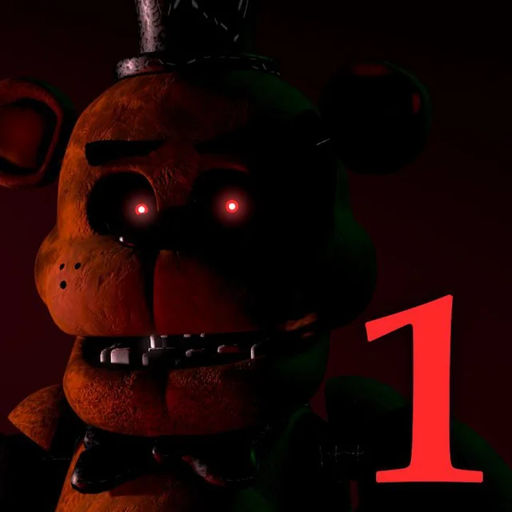
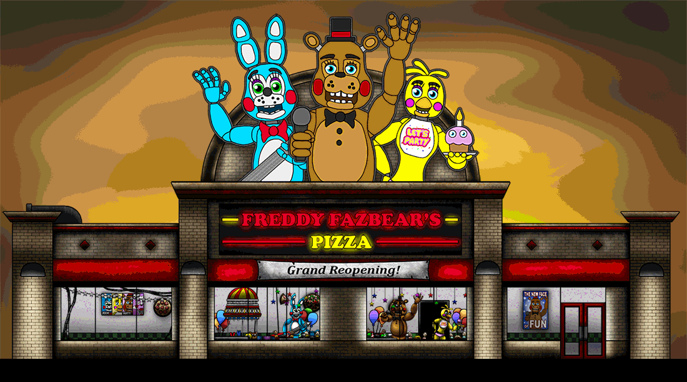
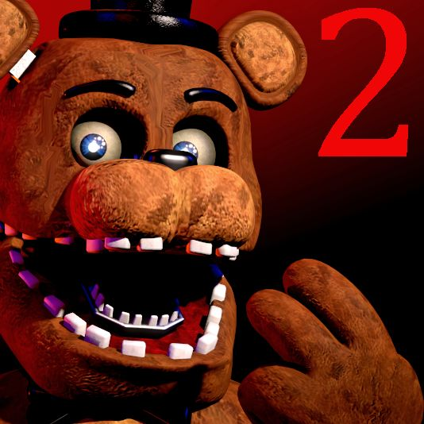
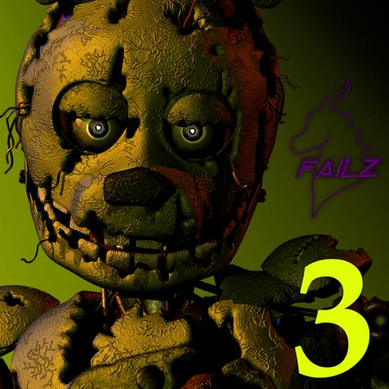
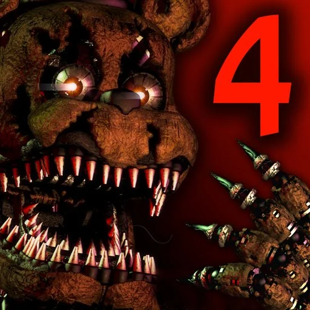

FNAF 1
2014 · Freddy Fazbear's Pizza
Survive five nights as the night guard, watching cameras and doors.
FAN ARCHIVE · FNAF 1–4
Explore the games, characters and story of the first four Five Nights at Freddy's games.


2014 · Freddy Fazbear's Pizza
Survive five nights as the night guard, watching cameras and doors.

2014 · New pizzeria location
More animatronics, no doors, and a wind-up music box to keep running.

2015 · Fazbear's Fright
A horror attraction haunted by a single decayed animatronic.

2015 · A child's bedroom
Nightmare animatronics approach through doors, closet and bed.